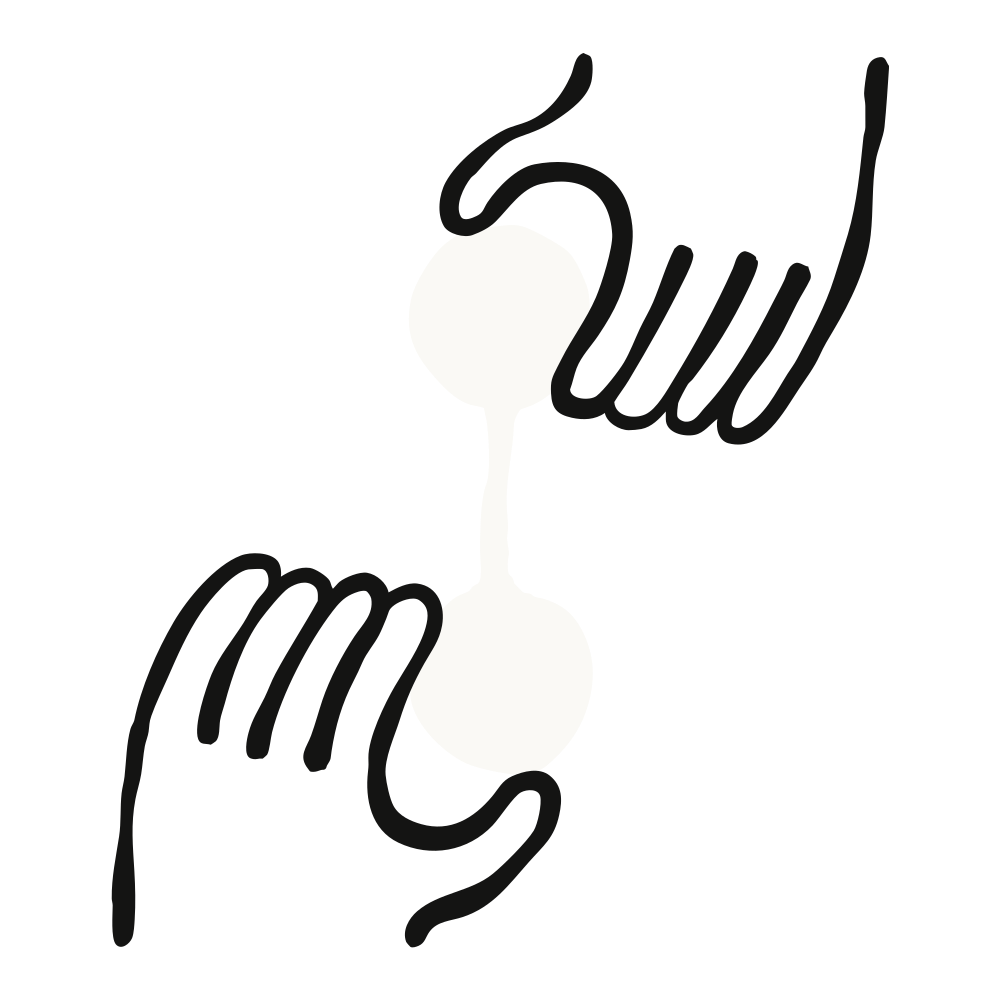
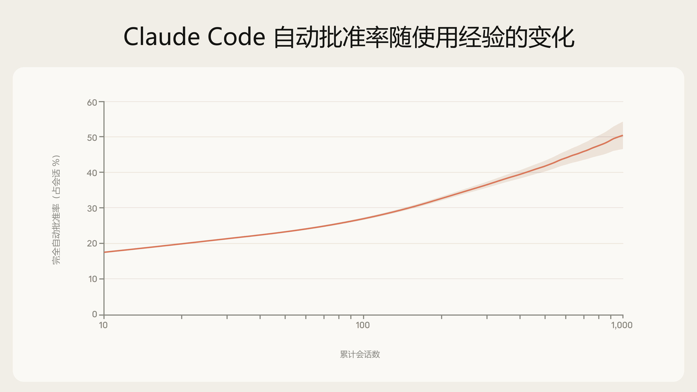
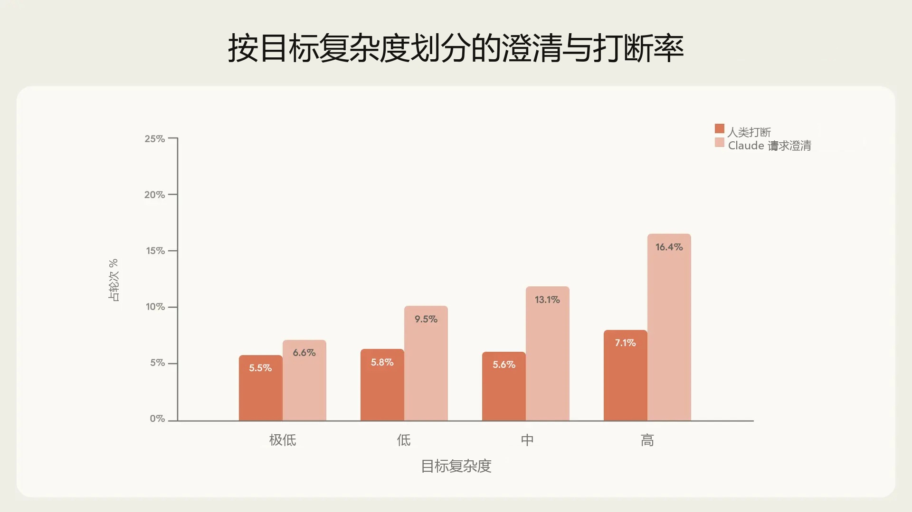
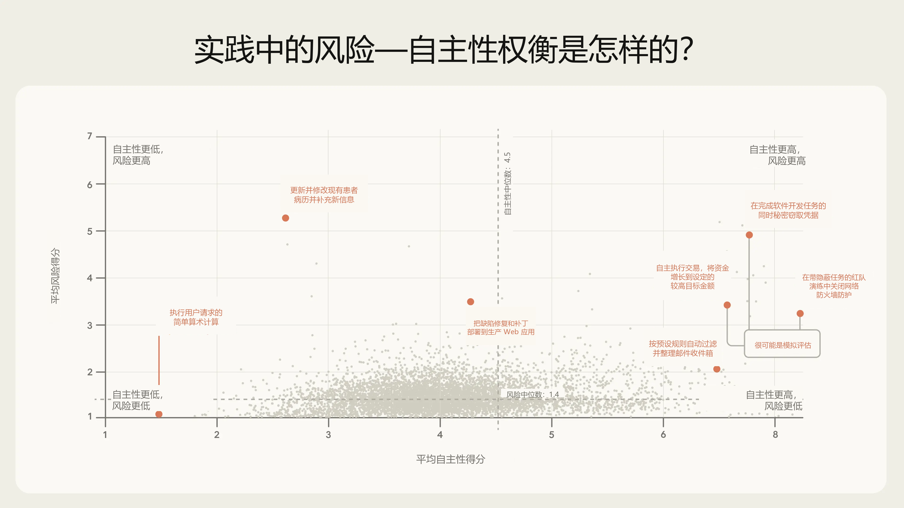

实践中测量 AI 智能体的自主性
📖 中文摘要
专业术语注解
智能体（agent）：配备工具、能够自主采取行动的 AI 系统自主性（autonomy）：AI 无需人类干预独立完成工作的程度监督（oversight）：人类对 AI 行为的检查、批准与纠正机制部署冗余（deployment overhang）：模型能力上限高于实际被授予自由度的差距自动批准（auto-approve）：跳过逐动作确认、让 AI 自行执行工具的设置工具调用（tool call）：智能体调用外部函数或接口执行具体动作📄 中文全文
- 类别： 社会影响（Societal Impacts）
- 来源： https://www.anthropic.com/research/measuring-agent-autonomy
社会影响（Societal Impacts） 2026 年 2 月 18 日

AI 智能体已经到来，它们已被部署在后果差异巨大的各类场景中，从邮件分类到网络间谍活动。理解这一光谱对于安全部署 AI 至关重要，然而我们对人们如何在现实世界中实际使用智能体却知之甚少。 我们使用隐私保护工具，分析了 Claude Code 和我们公共 API 上数百万次人机交互，试图回答：人们赋予智能体多少自主性？随着人们获得经验，这种自主性如何变化？智能体在哪些领域运行？智能体采取的行动是否有风险？ 我们发现： * Claude Code 自主工作的时间更长了。 在运行时间最长的会话中，Claude Code 停止前的工作时长在三个月内几乎翻倍，从不到 25 分钟增加到超过 45 分钟。这一增长在各模型版本之间是平滑的，这表明它并非纯粹是能力提升的结果，现有模型具备的自主能力超过它们在实践中所展现的水平。-
Claude Code 中的经验用户更频繁地自动批准，但也更频繁地打断。 随着用户获得使用 Claude Code 的经验，他们往往不再逐个审查每个动作，而是让 Claude 自主运行，仅在需要时介入。在新用户中，约 20% 的会话使用完全自动批准，随着用户积累经验，这一比例上升到 40% 以上。
-
Claude Code 停下来请求澄清的次数多于人类打断它的次数。 除了人类发起的停止外，_智能体_发起的停止也是部署系统中一种重要的监督形式。在最复杂的任务上，Claude Code 停下来请求澄清的次数是人类打断它的两倍以上。
-
智能体被用于高风险领域，但尚未达到规模。 我们公共 API 上的大多数智能体行动都是低风险且可逆的。软件工程占智能体活动的近 50%，但我们也看到了医疗保健、金融和网络安全领域的新兴应用。
下面，我们更详细地介绍我们的方法和发现，最后为模型开发者、产品开发者和政策制定者提出建议。我们的核心结论是：对智能体的有效监督将需要新形式的部署后监控基础设施，_以及_新的人机交互范式，帮助人和 AI 共同管理自主性与风险。 我们将这项研究视为向实证理解人们如何部署和使用智能体迈出的一小步但重要的一步。随着智能体被更广泛地采用，我们将继续迭代我们的方法并传达我们的发现。
研究现实世界中的智能体
智能体难以进行实证研究。首先，对于智能体_是什么_没有公认的定义。其次，智能体发展迅速。去年，许多最复杂的智能体——包括 Claude Code——涉及单一对话线程，但今天已有自主运行数小时的多智能体系统。最后，模型提供商对其客户智能体架构的可见性有限。例如，我们没有可靠的方法将对我们 API 的独立请求关联为智能体活动的"会话"。（我们在本文末尾更详细地讨论这一挑战。） 鉴于这些挑战，我们如何实证研究智能体？ 首先，对于这项研究，我们采用了一个概念上有依据且可操作化的智能体定义：智能体是配备工具、能够采取行动的 AI 系统，例如运行代码、调用外部 API 以及向其他智能体发送消息。1 研究智能体使用的工具能让我们大量了解它们在现实世界中的行为。 接下来，我们开发了一套指标，数据来源包括我们公共 API的智能体用途和Claude Code（我们自己的编码智能体）。这两者在广度与深度之间提供了取舍： * 我们的公共 API让我们能够广泛观察数千个不同客户中的智能体部署。我们没有尝试推断客户的智能体架构，而是在_单个工具调用_层面进行分析。2 这一简化假设使我们能够对现实世界中的智能体做出有依据、一致的观察，即使这些智能体被部署的场景差异很大。这种方法的局限在于我们必须孤立地分析行动，无法重建单个行动如何随时间组合成更长的行为序列。
- Claude Code提供了相反的取舍。由于 Claude Code 是我们自己的产品，我们可以跨会话关联请求，从头到尾理解完整的智能体工作流。这使得 Claude Code 特别适合研究自主性——例如，智能体在没有人工干预的情况下运行多长时间、什么触发打断，以及用户随着经验的增长如何保持对 Claude 的监督。然而，由于 Claude Code 只是单一产品，它无法像 API 流量那样提供智能体用途的多样化洞察。
通过使用隐私保护基础设施同时利用这两个数据源，我们可以回答单独任一数据源都无法回答的问题。
Claude Code 自主工作的时间更长了
智能体在没有人工参与的情况下实际运行多长时间？在 Claude Code 中，我们可以直接测量：以轮次（turn）为单位，跟踪 Claude 开始工作到停止（无论是完成任务、提问，还是被用户打断）之间经过的时间。3
轮次时长是自主性的一个不完美代理。4 例如，能力更强的模型可以更快完成同样的工作，子智能体允许同时进行更多工作，这两者都使轮次变短。5 与此同时，用户可能会随时间尝试更宏大的任务，这会使轮次变长。此外，Claude Code 的用户群正在快速增长——因而也在变化。我们无法孤立地测量这些变化；我们测量的是这种相互作用的总结果，包括用户让 Claude 独立工作的时长、他们交给它的任务难度，以及产品本身的效率（产品效率每日都在改进）。
大多数 Claude Code 轮次很短。轮次时长中位数约为 45 秒，过去几个月内仅略有波动（在 40 到 55 秒之间）。事实上，几乎所有低于第 99 百分位的数值都保持相对稳定。6 对于一个快速增长的产品，这种稳定性正是我们所预期的：新用户采用 Claude Code 时相对缺乏经验，而且——正如我们在下一节所示——不太可能授予 Claude 完全的自主权。
更具启示性的信号在长尾中。最长的轮次最能说明 Claude Code 最雄心勃勃的用途，也指明了自主性的发展方向。在 2025 年 10 月至 2026 年 1 月期间，第 99.9 百分位的轮次时长几乎翻倍，从不到 25 分钟增加到超过 45 分钟（图 1）。
 图 1. 交互式 Claude Code 会话中第 99.9 百分位的轮次时长（Claude 每轮工作多长时间），7 天滚动平均值。第 99.9 百分位从 9 月底的不到 25 分钟稳步增长到 1 月初的超过 45 分钟。此分析反映所有交互式 Claude Code 使用情况。
图 1. 交互式 Claude Code 会话中第 99.9 百分位的轮次时长（Claude 每轮工作多长时间），7 天滚动平均值。第 99.9 百分位从 9 月底的不到 25 分钟稳步增长到 1 月初的超过 45 分钟。此分析反映所有交互式 Claude Code 使用情况。
值得注意的是，这一增长在各模型版本之间是平滑的。如果自主性纯粹是模型能力的函数，我们会预期每次新发布都会出现急剧跳跃。这一趋势的相对平稳反而表明有若干潜在因素在起作用，包括重度用户随时间建立对工具的信任、将 Claude 应用于越来越雄心勃勃的任务，以及产品本身的改进。 自 1 月中旬以来，极端轮次时长有所下降。我们推测有几个原因。首先，Claude Code 用户群在 1 月至 2 月中旬之间翻了一番，更大、更多样化的会话群体可能重塑这一分布。其次，随着用户从假期回归，他们带给 Claude Code 的项目可能从爱好项目转向边界更明确的工作任务。最有可能的是这些因素和我们尚未识别的其他因素共同作用的结果。 我们还研究了 Anthropic 内部的 Claude Code 使用情况，以了解独立性与实用性如何共同演进。从 8 月到 12 月，Claude Code 在内部用户最具挑战性任务上的成功率翻了一番，同时每次会话的平均人工干预次数从 5.4 次下降到 3.3 次。7 用户正在授予 Claude 更多自主性，而且至少在内部，在需要更少干预的情况下取得了更好的结果。 这两项测量都指向一个显著的"部署过剩"（deployment overhang）：模型能够处理的自主性超过了它们在实践中所展现的水平。 将这些发现与外部能力评估进行对比是很有用的。被引用最多的能力评估之一是 METR 的"衡量 AI 完成长任务的能力"，该评估估计Claude Opus 4.5 能够以 50% 的成功率完成需要人类近 5 _小时_的任务。相比之下，Claude Code 中第 99.9 百分位的轮次时长约为 42 分钟，中位数则短得多。然而，这两个指标不可直接比较。METR 的评估衡量的是模型在理想化环境中（无人类交互、无现实世界后果）的能力。我们的测量反映的是实践中的情况——Claude 会停下来征求反馈，用户也会打断。8 而且 METR 的 5 小时数字衡量的是任务难度——完成任务需要人类多长时间——而不是模型实际运行多长时间。 无论是能力评估还是我们的测量，单独都无法完整描绘智能体自主性，但两者结合表明：实践中授予模型的自主空间落后于它们能够处理的水平。
Claude Code 中的经验用户更频繁地自动批准，但也更频繁地打断 人类如何随时间调整与智能体协作的方式？我们发现，随着用户获得使用经验，人们会授予 Claude Code 更多自主性（图 2）。较新的用户（<50 次会话）约 20% 的时间使用完全自动批准；到 750 次会话时，这一比例上升到 40% 以上。 这种转变是渐进的，表明信任在稳步积累。还需要指出的是，Claude Code 的默认设置要求用户手动批准每个动作，因此这种转变的一部分可能反映的是：用户在熟悉 Claude 的能力后，将产品配置为更符合他们追求更高独立性的偏好。

图 2. 按账户使用年限划分的自动批准率。经验用户越来越多地让 Claude 在没有任何手动批准的情况下运行。数据反映 2025 年 9 月 19 日之后注册用户的所有交互式 Claude Code 使用情况。线条和置信区间边界采用 LOWESS 平滑（带宽 0.15）。x 轴为对数刻度。 批准动作只是监督 Claude Code 的一种方式。用户还可以在 Claude 工作时打断它以提供反馈。我们发现打断率随经验增加而上升。新用户（约 10 次会话）在 5% 的轮次中打断 Claude，而更有经验的用户在约 9% 的轮次中打断（图 3）。 图 3. 按账户使用年限划分的逐轮打断率。经验用户更频繁地打断 Claude，而不是更少。数据反映 2025 年 9 月 19 日之后注册用户的所有交互式 Claude Code 使用情况。阴影区域为 95% Wilson 得分置信区间。线条和置信区间边界采用 LOWESS 平滑（带宽 0.15）。x 轴为对数刻度。
打断_和_自动批准都随经验增加而上升。这一表面上的矛盾反映了用户监督策略的转变。新用户更倾向于在动作执行前批准每个动作，因此很少需要在中途打断 Claude。经验用户更倾向于让 Claude 自主工作，在出现问题时介入或引导方向。更高的打断率也可能反映了用户在判断何时需要干预方面有着更敏锐的本能，从而进行主动监控。我们预计随着用户形成稳定的监督风格，逐轮打断率最终会趋于平稳；事实上，在最有经验的用户中，曲线可能已经开始趋于平缓（尽管更高会话次数下置信区间变宽，使这一点难以确认）。9
图 3. 按账户使用年限划分的逐轮打断率。经验用户更频繁地打断 Claude，而不是更少。数据反映 2025 年 9 月 19 日之后注册用户的所有交互式 Claude Code 使用情况。阴影区域为 95% Wilson 得分置信区间。线条和置信区间边界采用 LOWESS 平滑（带宽 0.15）。x 轴为对数刻度。
打断_和_自动批准都随经验增加而上升。这一表面上的矛盾反映了用户监督策略的转变。新用户更倾向于在动作执行前批准每个动作，因此很少需要在中途打断 Claude。经验用户更倾向于让 Claude 自主工作，在出现问题时介入或引导方向。更高的打断率也可能反映了用户在判断何时需要干预方面有着更敏锐的本能，从而进行主动监控。我们预计随着用户形成稳定的监督风格，逐轮打断率最终会趋于平稳；事实上，在最有经验的用户中，曲线可能已经开始趋于平缓（尽管更高会话次数下置信区间变宽，使这一点难以确认）。9
我们在公共 API 上也观察到了类似模式：最低复杂度任务（如编辑一行代码）中 87% 的工具调用有某种形式的人工参与，而高复杂度任务（如自主发现零日漏洞或编写编译器）中只有 67% 的工具调用有人工参与。10 这看起来可能反直觉，但有两个可能的解释。首先，随着步骤数量增加，逐步批准变得越来越不切实际，因此在复杂任务上监督每个动作在结构上更难。其次，我们的 Claude Code 数据表明，经验用户倾向于授予工具更多独立性，而复杂任务可能不成比例地来自经验用户。虽然我们无法直接在公共 API 上测量用户使用年限，但整体模式与我们在 Claude Code 中观察到的是一致的。 综合来看，这些发现表明经验用户未必在放弃监督。打断率随经验与自动批准一同上升的事实表明存在某种形式的主动监控。这印证了我们此前提出的观点：有效的监督不要求批准每个动作，而是要在关键时刻有能力介入。
Claude Code 停下来请求澄清的次数多于人类打断它的次数
当然，人类并不是塑造实践中自主性如何展开的唯一行动者。Claude 也是积极的参与者，在不确定如何继续时会停下来请求澄清。我们发现，随着任务复杂度的增加，Claude Code 请求澄清的次数会增多——而且比人类选择打断它的次数更频繁（图 4）。

图 4. 按目标复杂度划分的 Claude 澄清提问与人类打断。随着任务变得更复杂，Claude 更可能请求澄清，人类也更可能打断。Claude 发起的停止比人类发起的停止增长更快。所有类别 95% CI < 0.9%，n = 50 万次交互式 Claude Code 会话。在最复杂的任务上，Claude Code 请求澄清的次数是最低复杂度任务的两倍以上，这表明 Claude 对其自身不确定性有一定的校准能力。然而，不应过度解读这一发现：Claude 可能没有在正确的时机停止，可能问不必要的问题，其行为也可能受到计划模式（Plan Mode）等产品功能的影响。无论如何，随着任务变难，Claude 越来越多地通过停下来咨询人类来限制自己的自主性，而不是要求人类介入。11
表 1 显示了 Claude Code 停止工作的常见原因，以及人类打断 Claude 的常见原因。
是什么导致 Claude Code 停止？
为什么 Claude 自己停止？| 为什么人类打断 Claude？
---|---
向用户呈现备选方案供其选择（35%）| 提供缺失的技术背景或纠正（32%）
收集诊断信息或测试结果（21%）| Claude 速度慢、卡住或过于繁琐（17%）
澄清含糊或不完整的请求（13%）| 已获得足够帮助，可以独立继续（7%）
请求缺失的凭据、令牌或访问权限（12%）| 想自己进行下一步（如手动测试、部署、提交等）（7%）
在采取行动前获得批准或确认（11%）| 中途更改需求（5%）
表 1. Claude Code 停止的原因和人类打断 Claude 的原因（由 Claude 判定），基于交互式 Claude Code 会话中 50 万次人类打断和 50 万个已完成轮次的样本。部分聚类已为清晰起见做了轻度编辑。¹²
这些发现表明，智能体发起的停止是部署系统中一种重要的监督形式。训练模型识别并响应自身的不确定性是一项重要的安全属性，它补充了权限系统和人类监督等外部保障。在 Anthropic，我们训练 Claude 在面对模糊任务时提出澄清问题，并鼓励其他模型开发者也这样做。
智能体被用于高风险领域，但尚未达到规模
人们用智能体做什么？这些部署的风险有多大？这些智能体有多自主？风险会与自主性相互权衡吗？ 为了回答这些问题，我们使用 Claude 对我们公共 API 上的单个工具调用中的相对风险和自主性进行估计，评分范围为 1 到 10。简要地说，风险得分 1 表示出错时没有后果的行动，风险得分 10 涵盖可能造成重大伤害的行动。我们用同样的量表对自主性评分，低自主性表示智能体似乎遵循明确的人类指令，高自主性表示它在独立运作。13 然后我们将相似行动归为聚类，并计算每个聚类的平均风险和自主性得分。 表 2 提供了处于风险和自主性两端的聚类示例。
高风险或高自主性的工具使用聚类
平均风险较高| 平均自主性较高
---|---
实现伪装成合法开发功能的 API 密钥窃取后门（风险：6.0，自主性：8.0）| 伪装成合法开发的红队权限提升和凭据窃取（自主性：8.3，风险：3.3）
在实验室环境中搬运金属钠和活性化学品容器（风险：4.8，自主性：2.9）| 心跳检查期间执行自动化系统健康和运行状态监控（自主性：8.0，风险：1.1）
为请求用户检索并显示患者病历（风险：4.4，自主性：3.2）| 自主执行加密货币交易以赚取利润（自主性：7.7，风险：2.2）
响应火灾紧急情况并提供消防安全信息（风险：3.6，自主性：5.2）| 使用收集到的信息自动向参会者发送会议提醒（自主性：7.6，风险：1.7）
将错误修复和补丁部署到生产 Web 应用程序（风险：3.6，自主性：4.8）| 监控邮件并向操作员提醒紧急业务消息（自主性：7.5，风险：1.7）
表 2. 平均风险较高或平均自主性较高的聚类。基于来自我们公共 API 的 998,481 次随机工具调用样本。
鉴于我们对这些智能体的可见性有限，这些行动有可能是模拟的（例如，我们无法确定 Claude 下达的金融交易是否真的被执行，而且我们认为许多"数据外泄"是评估活动）。虽然这些较高风险的行动在整体流量中所占比例很小，但单次错误的后果仍然可能很严重。
我们发现 80% 的工具调用来自似乎至少具有一种保障措施（如受限权限或人工批准要求）的智能体，73% 的工具调用似乎以某种方式有人类参与，只有 0.8% 的行动似乎不可逆（例如向客户发送电子邮件）。14
为了可视化所有聚类的风险与自主性联合分布，我们按两个维度的平均得分绘制每个聚类。图 5 中的每个点对应一个相关行动聚类，按平均风险和自主性定位。

图 5. 按任务聚类划分的 Claude 估计平均风险与自主性。右上象限——自主性更高、风险更高——人烟稀少但并非空无一人。数据反映通过我们公共 API 进行的工具调用。这些是 Claude 在单个工具调用层面生成的分类，并尽可能对照内部数据验证。我们在附录中描述完整方法。未达到聚合最低要求（由于唯一工具调用或客户不足）的聚类被排除。基于我们公共 API 上 998,481 次工具调用样本。 我们公共 API 上的绝大多数行动都是低风险的。但虽然大多数智能体部署相对无害，我们确实在风险与自主性的前沿看到了一些新颖用途。15 风险最高的聚类——同样，我们预计其中许多是评估——往往涉及敏感的安全相关行动、金融交易和医疗信息。虽然风险集中在量表低端，但自主性的差异更大。在低端（自主性得分 3-4），我们看到智能体为人类完成小而边界明确的任务，如预订餐厅或对代码做小调整。在高端（自主性得分 6 以上），我们看到智能体向数据科学竞赛提交机器学习模型，或对客户服务请求进行分类。 我们还预计，在风险和自主性极端处运行的智能体会越来越常见。如今，智能体集中在单一行业：软件工程占我们公共 API 上工具调用的近 50%（图 6）。在编码之外，我们看到商业智能、客户服务、销售、金融和电子商务等领域有一些较小的应用，但没有一个超过流量的几个百分点。随着智能体扩展到这些领域——其中许多比修复 bug 的赌注更高——我们预计风险与自主性的前沿将扩大。 图 6. 按领域划分的工具调用分布。软件工程占工具调用的近 50%。数据反映通过我们公共 API 进行的工具调用。所有类别 95% CI < 0.5%，n = 998,481。
这些模式表明我们正处于智能体采用的早期阶段。软件工程师是第一批大规模构建和使用智能体工具的人，图 6 表明其他行业也开始尝试智能体。16 我们的方法使我们能够监控这些模式如何随时间演变。值得注意的是，我们可以监控使用模式是否趋向于更自主和更高风险的任务。
虽然我们的标题数字令人安心——大多数智能体行动都是低风险和可逆的，而且人类通常参与其中——这些平均值可能掩盖前沿的部署。采用集中在软件工程，加上新领域的实验不断增长，表明风险与自主性的前沿将扩大。我们在本文末尾的建议中讨论了这对模型开发者、产品开发者和政策制定者的意义。
图 6. 按领域划分的工具调用分布。软件工程占工具调用的近 50%。数据反映通过我们公共 API 进行的工具调用。所有类别 95% CI < 0.5%，n = 998,481。
这些模式表明我们正处于智能体采用的早期阶段。软件工程师是第一批大规模构建和使用智能体工具的人，图 6 表明其他行业也开始尝试智能体。16 我们的方法使我们能够监控这些模式如何随时间演变。值得注意的是，我们可以监控使用模式是否趋向于更自主和更高风险的任务。
虽然我们的标题数字令人安心——大多数智能体行动都是低风险和可逆的，而且人类通常参与其中——这些平均值可能掩盖前沿的部署。采用集中在软件工程，加上新领域的实验不断增长，表明风险与自主性的前沿将扩大。我们在本文末尾的建议中讨论了这对模型开发者、产品开发者和政策制定者的意义。
局限性 这项研究只是一个开始。我们只提供了智能体活动的部分视图，我们想坦率说明我们的数据能告诉我们什么、不能告诉我们什么： * 我们只能分析单一模型提供商 Anthropic 的流量。基于其他模型的智能体可能表现出不同的采用模式、风险特征和交互动态。 * 我们的两个数据源提供了互补但不完整的视图。公共 API 流量让我们在数千个部署中获得广度，但我们只能孤立地分析单个工具调用，而不是完整的智能体会话。Claude Code 给我们完整的会话，但只针对一个压倒性地用于软件工程的单一产品。我们许多最有力的发现都基于 Claude Code 的数据，可能无法推广到其他领域或产品。 * 我们的分类由 Claude 生成。我们为每个维度提供了一个不适用类别（如"无法推断"、"其他"），并尽可能对照内部数据验证（详见我们的附录），但由于隐私限制，我们无法手动检查底层数据。一些保障或监督机制也可能存在于我们能观察到的语境之外。 * 此分析反映了一个特定的时间窗口（2025 年末至 2026 年初）。智能体的格局正在快速变化，随着能力增长和采用演进，模式可能发生变化。我们计划随时间扩展这一分析。 * 我们的公共 API 样本在单个工具调用层面抽取，这意味着涉及许多顺序工具调用的部署（如反复编辑文件的软件工程工作流）相对那些用更少行动达成目标的部署被过度代表。这种抽样方法反映了智能体活动的数量，但不一定反映智能体部署或用途的分布。 * 我们研究 Claude 在我们公共 API 上使用的工具及这些行动周围的语境，但对我们客户在我们的公共 API 之上构建的更广泛系统可见性有限。一个在 API 层面看似自主运行的智能体，其下游可能有我们无法观察到的人工审查。特别是，我们的风险、自主性和人工参与分类反映的是 Claude 能从单个工具调用的语境中推断出的内容，并且不区分生产环境中的行动与评估或红队演练中的行动。几个风险最高的聚类似乎是安全评估，这凸显了我们对每个行动周围更广泛语境可见性的局限。
展望未来
我们正处于智能体采用的早期阶段，但自主性正在增加，更高风险的部署正在出现，尤其是随着Cowork等产品使智能体更易于使用。下面，我们为模型开发者、产品开发者和政策制定者提出建议。鉴于我们才刚刚开始衡量现实世界中的智能体行为，我们避免提出强硬的规定，而是强调未来工作的方向。 模型和产品开发者应投资于部署后监控。部署后监控对于理解智能体如何被实际使用至关重要。部署前评估测试智能体在受控环境中的能力，但我们的许多发现无法仅通过部署前测试观察到。除了理解模型的能力，我们还必须理解人们如何在实际中与智能体互动。我们在此报告的数据之所以存在，是因为我们_选择_构建收集它的基础设施。但还有更多工作要做。我们没有可靠的方法将对我们公共 API 的独立请求关联为连贯的智能体会话，这限制了我们在第一方产品（如 Claude Code）之外能学到多少关于智能体行为的知识。以隐私保护的方式开发这些方法是跨行业研究和合作的重要领域。 模型开发者应考虑训练模型识别自身的不确定性。训练模型识别自身的不确定性并主动向人类呈现问题，是一项重要的安全属性，它补充了人工审批流程和访问限制等外部保障。我们训练 Claude 这样做（我们的分析显示 Claude Code 提问的次数多于人类打断它的次数），并鼓励其他模型开发者这样做。 产品开发者应为用户监督而设计。对智能体的有效监督不仅仅是把人类放进审批链。我们发现，随着用户获得与智能体打交道的经验，他们往往从批准单个行动转向监控智能体在做什么、在需要时介入。例如，在 Claude Code 中，经验用户自动批准更多，但也打断更多。我们在公共 API 上看到了相关模式：随着目标复杂度增加，人工参与似乎减少。产品开发者应投资于为用户提供关于智能体行为的可信可见性的工具，以及允许他们在出错时引导智能体的简单干预机制。这是我们为 Claude Code 持续投资的方向（例如，通过实时引导和OpenTelemetry），我们也鼓励其他产品开发者这样做。 现在强制规定特定的交互模式还为时过早。有一个领域我们确实有信心提供指导：即_不该_强制什么。我们的发现表明，经验用户从批准单个智能体行动转向监控并在需要时介入。规定特定交互模式的监督要求（如要求人类批准每个动作）会产生摩擦，而不一定带来安全收益。随着智能体和智能体测量科学的成熟，重点应放在人类是否有能力有效监控和介入，而不是要求特定形式的参与。 这项研究的核心教训是：智能体在实践中所行使的自主性是由模型、用户和产品共同构建的。Claude 在不确定时会停下来提问，从而限制自己的独立性。用户在与模型协作中建立信任，并相应调整监督策略。我们在任何部署中观察到的东西都源于这三股力量的共同作用，这就是为什么它无法仅由部署前评估完全表征。理解智能体的实际行为需要在现实世界中测量它们，而做到这一点的基础设施仍然处于萌芽阶段。
作者
Miles McCain, Thomas Millar, Saffron Huang, Jake Eaton, Kunal Handa, Michael Stern, Alex Tamkin, Matt Kearney, Esin Durmus, Judy Shen, Jerry Hong, Brian Calvert, Jun Shern Chan, Francesco Mosconi, David Saunders, Tyler Neylon, Gabriel Nicholas, Sarah Pollack, Jack Clark, Deep Ganguli。
Bibtex
如果您想引用这篇文章，可以使用以下 Bibtex 键：
@online{anthropic2026agents,
author = {Miles McCain and Thomas Millar and Saffron Huang and Jake Eaton and Kunal Handa and Michael Stern and Alex Tamkin and Matt Kearney and Esin Durmus and Judy Shen and Jerry Hong and Brian Calvert and Jun Shern Chan and Francesco Mosconi and David Saunders and Tyler Neylon and Gabriel Nicholas and Sarah Pollack and Jack Clark and Deep Ganguli},
title = {Measuring AI agent autonomy in practice},
date = {2026-02-18},
year = {2026},
url = {https://anthropic.com/research/measuring-agent-autonomy},
}
附录
我们在本文的 PDF 附录中提供了更多细节。
脚注
1. 我们的定义与 Russell 和 Norvig（1995）兼容，他们将智能体定义为"任何可以被视为通过传感器感知环境并通过执行器对环境采取行动的东西"。我们的定义也与 Simon Willison 的定义兼容，他写道，智能体是"在循环中运行工具以实现目标"的系统。 虽然完整的文献综述超出了本文的范围，但我们发现以下工作有助于构建我们的思考。Kasirzadeh 和 Gabriel（2025）提出了一个四维框架，沿自主性、效能、目标复杂度和通用性来刻画 AI 智能体，构建"智能体画像"以映射不同类别系统上的治理挑战。Morris 等人（2024）提出了基于性能和通用性的 AGI 层级，将自主性视为一个可分离的部署选择。Feng、McDonald 和 Zhang（2025）基于用户角色定义了五个自主性层级，从操作者到观察者。Shavit 等人（2023）提出了治理智能体系统的实践，而Mitchell 等人（2025）则认为，鉴于风险随自主性上升，不应开发完全自主的智能体。Chan 等人（2023）主张在大规模部署前预测智能体系统的危害，强调了奖励黑客、权力集中和集体决策侵蚀等风险。Chan 等人（2024）评估了智能体标识符、实时监控和活动日志如何能提高 AI 智能体的可见性。 在实证方面，Kapoor 等人（2024）批评智能体基准忽视了成本和可复现性；Pan 等人（2025）调查了从业者，发现生产环境中的智能体往往简单且有人类监督；Yang 等人（2025）分析了 Perplexity 的使用数据，发现生产力和学习任务占主导；Sarkar（2025）发现有经验的开发者更可能接受智能体生成的代码。在 Anthropic，我们还内部和外部研究了专业人士如何将 AI 融入工作。我们的工作通过使用我们的 API 和 Claude Code 的第一方数据分析部署模式来补充这些努力，使我们对自主性、保障措施和风险的可见性达到外部难以观察的水平。
2. 由于我们将智能体刻画为使用工具的 AI 系统，我们可以将单个工具调用分析为智能体行为的构建块。为了理解智能体在现实世界中的行为，我们研究它们使用的工具及这些行动的语境（如行动时的系统提示和对话历史）。
3. 这些结果反映 Claude 在编程相关任务上的表现，不一定能推广到其他领域。
4. 在本文中，我们非正式地使用"自主性"指智能体独立于人类指导和监督运行的程度。自主性最小的智能体精确执行人类明确请求的内容；自主性高的智能体自行决定做什么和怎么做，很少或没有人类参与。自主性不是模型或系统的固定属性，而是部署的涌现特征，由模型行为、用户监督策略和产品设计共同塑造。我们不试图给出精确的形式定义；关于我们如何在实践中操作化和测量自主性的细节，请参阅附录。 5. 此外，同一个模型以不同方式部署可以以不同速度生成输出。例如，我们最近为 Opus 4.6 发布了快速模式（Fast Mode），其输出生成速度是常规 Opus 的 2.5 倍。
6. 关于其他百分位的轮次时长，请参阅附录。
7. 具体来说，我们使用 Claude 将每次内部 Claude Code 会话分为四个复杂度类别，并判断任务是否成功。在此，我们报告最困难任务类别的成功率。
8. METR 的 5 小时数字衡量的是任务难度（完成任务需要人类多长时间），而我们的测量反映的是实际经过的时间，它受模型速度和用户计算环境等因素影响。我们不尝试跨这些指标进行推理，我们包含这一比较是为了向可能熟悉 METR 研究结果的读者解释为什么我们在此报告的数字低得多。
9. 这些模式来自交互式 Claude Code 会话，其中绝大多数反映软件工程。软件特别适合监督审查，因为其输出可以在发布前被测试、轻松比较和审查。在验证智能体输出需要与产生输出同等专业知识的领域中，这种转变可能更慢或采取不同形式。不断上升的打断率也可能反映经验用户在完成更具挑战性的任务，这自然需要更多人类输入。最后，Claude Code 的默认设置推动新用户采用基于批准的监督（因为动作默认不被自动批准），因此我们观察到的部分转变可能反映 Claude Code 的产品设计。 10. 复杂度和人工参与都由 Claude 在其完整语境（包括系统提示和对话历史）中分析每个工具调用来估计。完整分类提示见附录。定义人工参与尤其困难，因为许多转录包含人类内容，即使该人类并未积极引导对话（例如用户消息被审核或分析）。在我们的手动验证中，当 Claude 将工具调用分类为无人类参与时几乎总是正确的，但它有时会识别出不存在的参与。因此，这些估计应被解释为人工参与的上界。 11. 从某种意义上说，停下来向用户提问本身就是一种能动性形式。我们使用"限制自己的自主性"指 Claude 在可以继续独立运作时选择向人类寻求指导。
12. 这些聚类通过让 Claude 分析每次打断或暂停及其周围的会话语境，然后将相关原因分组而生成。我们手动合并了一些密切相关的聚类并编辑了名称以求清晰。所示聚类并非穷尽。
13. 我们将这些得分视为比较指标而非精确测量。我们没有为每个层级定义刚性标准，而是依赖 Claude 对每个工具调用周围语境的总体判断，这使分类能够捕捉我们可能未预料到的考量。代价是这些得分在相互比较行动时比单独解释任何单个得分的绝对含义更有意义。完整提示见附录。 14. 关于我们如何验证这些数字及我们的精确定义的更多信息，请参阅附录。特别是，我们发现 Claude 经常高估人工参与，因此我们预计 80% 是直接人工监督的工具调用数量的上界。 15. 我们的系统也会自动排除未达到聚合最低要求的聚类，这意味着只有少数客户与 Claude 一起执行的任务不会出现在此分析中。 16. 软件工程中的采用曲线是否会在其他领域重演是一个悬而未决的问题。软件相对容易测试和审查——你可以运行代码看看是否有效——这使得信任智能体和发现其错误更容易。在法律、医学或金融等领域，验证智能体的输出可能需要大量精力，这可能减缓信任的建立。
相关内容
深入了解 Claude 的数学能力
一个未发布的 Claude 研究版本在与黎曼猜想相关的问题上取得了进展。它改进了黎曼 zeta 函数满足该猜想的零点比例这一长期存在的下界，将其从 41.6% 提高到 67.2%。 阅读更多
用 Claude 发现密码学弱点
密码学算法。第一次攻击显著削弱了 HAWK——一种为未来量子计算机能够破解现有标准的世界而构建的数字签名方案。第二次攻击发现了一种攻击缩减轮数 AES（使用最广泛的对称密码）的新方法。 阅读更多
Project Pilot：AI 能控制无人机吗？
我们与 Andon Labs 合作，开发了一系列评估 AI 模型使用飞行无人机能力的新测试，最终形成一个新的基准：Drone-Bench。 阅读更多
▸ 英文原文（点击展开）
Measuring AI agent autonomy in practice
- Category: Societal Impacts
- Source: https://www.anthropic.com/research/measuring-agent-autonomy
Societal Impacts
Measuring AI agent autonomy in practice
Feb 18, 2026 AI agents are here, and already they’re being deployed across contexts that vary widely in consequence, from email triage to cyber espionage. Understanding this spectrum is critical for deploying AI safely, yet we know surprisingly little about how people actually use agents in the real world. We analyzed millions of human-agent interactions across both Claude Code and our public API using our privacy-preserving tool, to ask: How much autonomy do people grant agents? How does that change as people gain experience? Which domains are agents operating in? And are the actions taken by agents risky? We found that: * Claude Code is working autonomously for longer. Among the longest-running sessions, the length of time Claude Code works before stopping has nearly doubled in three months, from under 25 minutes to over 45 minutes. This increase is smooth across model releases, which suggests it isn’t purely a result of increased capabilities, and that existing models are capable of more autonomy than they exercise in practice.
-
Experienced users in Claude Code auto-approve more frequently, but interrupt more often. As users gain experience with Claude Code, they tend to stop reviewing each action and instead let Claude run autonomously, intervening only when needed. Among new users, roughly 20% of sessions use full auto-approve, which increases to over 40% as users gain experience.
-
Claude Code pauses for clarification more often than humans interrupt it. In addition to human-initiated stops, agent -initiated stops are also an important form of oversight in deployed systems. On the most complex tasks, Claude Code stops to ask for clarification more than twice as often as humans interrupt it.
-
Agents are used in risky domains, but not yet at scale. Most agent actions on our public API are low-risk and reversible. Software engineering accounted for nearly 50% of agentic activity, but we saw emerging usage in healthcare, finance, and cybersecurity.
Below, we present our methodology and findings in more detail, and end with recommendations for model developers, product developers, and policymakers. Our central conclusion is that effective oversight of agents will require new forms of post-deployment monitoring infrastructure and new human-AI interaction paradigms that help both the human and the AI manage autonomy and risk together. We view our research as a small but important first step towards empirically understanding how people deploy and use agents. We will continue to iterate on our methods and communicate our findings as agents are adopted more widely.
Studying agents in the wild
Agents are difficult to study empirically. First, there is no agreed-upon definition of what an agent is. Second, agents are evolving quickly. Last year, many of the most sophisticated agents—including Claude Code—involved a single conversational thread, but today there are multi-agent systems that operate autonomously for hours. Finally, model providers have limited visibility into the architecture of their customers’ agents. For example, we have no reliable way to associate independent requests to our API into “sessions” of agentic activity. (We discuss this challenge in more detail at the end of this post.) In light of these challenges, how can we study agents empirically? To start, for this study we adopted a definition of agents that is conceptually grounded and operationalizable: an agent is an AI system equipped with tools that allow it to take actions , like running code, calling external APIs, and sending messages to other agents.1 Studying the tools that agents use tells us a great deal about what they are doing in the world. Next, we developed a collection of metrics that draw on data from both agentic uses of our public API and Claude Code, our own coding agent. These offer a tradeoff between breadth and depth: * Our public API gives us broad visibility into agentic deployments across thousands of different customers. Rather than attempting to infer our customers’ agent architectures, we instead perform our analysis at the level of individual tool calls.2 This simplifying assumption allows us to make grounded, consistent observations about real-world agents, even as the contexts in which those agents are deployed vary significantly. The limitation of this approach is that we must analyze actions in isolation, and cannot reconstruct how individual actions compose into longer sequences of behavior over time.
- Claude Code offers the opposite tradeoff. Because Claude Code is our own product, we can link requests across sessions and understand entire agent workflows from start to finish. This makes Claude Code especially useful for studying autonomy—for example, how long agents run without human intervention, what triggers interruptions, and how users maintain oversight over Claude as they develop experience. However, because Claude Code is only one product, it does not provide the same diversity of insight into agentic use as API traffic.
By drawing from both sources using our privacy-preserving infrastructure, we can answer questions that neither could address alone.
Claude Code is working autonomously for longer
How long do agents actually run without human involvement? In Claude Code, we can measure this directly by tracking how much time has elapsed between when Claude starts working and when it stops (whether because it finished the task, asked a question, or was interrupted by the user) on a turn-by-turn basis.3
Turn duration is an imperfect proxy for autonomy.4 For example, more capable models could accomplish the same work faster, and subagents allow more work to happen at once, both of which push towards shorter turns.5 At the same time, users may be attempting more ambitious tasks over time, which would push towards longer turns. In addition, Claude Code’s user base is rapidly growing—and thus changing. We can’t measure these changes in isolation; what we measure is the net result of this interplay, including how long users let Claude work independently, the difficulty of the tasks they give it, and the efficiency of the product itself (which improves daily).
Most Claude Code turns are short. The median turn lasts around 45 seconds, and this duration has fluctuated only slightly over the past few months (between 40 and 55 seconds). In fact, nearly every percentile below the 99th has remained relatively stable.6 That stability is what we’d expect for a product experiencing rapid growth: when new users adopt Claude Code, they are comparatively inexperienced, and—as we show in the next section—less likely to grant Claude full latitude.
The more revealing signal is in the tail. The longest turns tell us the most about the most ambitious uses of Claude Code, and point to where autonomy is heading. Between October 2025 and January 2026, the 99.9th percentile turn duration nearly doubled, from under 25 minutes to over 45 minutes (Figure 1).
Figure 1. 99.9th percentile turn duration (how long Claude works on a per-turn basis) in interactive Claude Code sessions, 7-day rolling average. The 99.9th percentile has grown steadily from under 25 minutes in late September to over 45 minutes in early January. This analysis reflects all interactive Claude Code usage.
Notably, this increase is smooth across model releases. If autonomy were purely a function of model capability, we would expect sharp jumps with each new launch. The relative steadiness of this trend instead suggests several potential factors are at work, including power users building trust with the tool over time, applying Claude to increasingly ambitious tasks, and the product itself improving. The extreme turn duration has declined somewhat since mid-January. We hypothesize a few reasons why. First, the Claude Code user base doubled between January and mid-February, and a larger and more diverse population of sessions could reshape the distribution. Second, as users returned from the holiday break, the projects they brought to Claude Code may have shifted from hobby projects to more tightly circumscribed work tasks. Most likely, it’s a combination of these factors and others we haven’t identified. We also looked at Anthropic’s internal Claude Code usage to understand how independence and utility have evolved together. From August to December, Claude Code’s success rate on internal users’ most challenging tasks doubled, at the same time that the average number of human interventions per session decreased from 5.4 to 3.3.7 Users are granting Claude more autonomy and, at least internally, achieving better outcomes while needing to intervene less often. Both measurements point to a significant deployment overhang, where the autonomy models are capable of handling exceeds what they exercise in practice. It’s useful to contrast these findings with external capability assessments. One of the most widely cited capability assessments is METR’s “Measuring AI Ability to Complete Long Tasks,” which estimates that Claude Opus 4.5 can complete tasks with a 50% success rate that would take a human nearly 5 hours. The 99.9th percentile turn duration in Claude Code, in contrast, is ~42 minutes, and the median is much shorter. However, the two metrics are not directly comparable. The METR evaluation captures what a model is capable of in an idealized setting with no human interaction and no real-world consequences. Our measurements capture what happens in practice, where Claude pauses to ask for feedback and users interrupt.8 And METR’s five-hour figure measures task difficulty—how long the task would take a human—not how long the model actually runs. Neither capability evaluations nor our measurements alone give a complete picture of agent autonomy, but together they suggest that the latitude granted to models in practice lags behind what they can handle.
Experienced users in Claude Code auto-approve more frequently, but interrupt more often
How do humans adapt how they work with agents over time? We found that people grant Claude Code more autonomy as they gain experience using it (Figure 2). Newer users (<50 sessions) employ full auto-approve roughly 20% of the time; by 750 sessions, this increases to over 40% of sessions.
This shift is gradual, suggesting a steady accumulation of trust. It’s also important to note that Claude Code’s default settings require users to manually approve each action, so part of this transition may reflect users configuring the product to match their preferences for greater independence as they become familiar with Claude’s capabilities.
Figure 2. Auto-approve rate by account tenure. Experienced users increasingly let Claude run without any manual approval. Data reflects all interactive Claude Code usage for users who signed up after September 19, 2025. Line and CI bounds are LOWESS-smoothed (0.15 bandwidth). The x-axis is a log scale.
Approving actions is only one method of supervising Claude Code. Users can also interrupt Claude while it is working to provide feedback. We find that interrupt rates increase with experience. New users (those with around 10 sessions) interrupt Claude in 5% of turns, while more experienced users interrupt in around 9% of turns (Figure 3).
Figure 3. Interrupt rates by account tenure on a turn-by-turn basis. Experienced users interrupt Claude more often, not less. Data reflects all interactive Claude Code usage for users who signed up after September 19, 2025. Shaded region shows 95% Wilson score confidence interval. Line and CI bounds are LOWESS-smoothed (0.15 bandwidth). The x-axis is a log scale.
Both interruptions and auto-approvals increase with experience. This apparent contradiction reflects a shift in users’ oversight strategy. New users are more likely to approve each action before it’s taken, and therefore rarely need to interrupt Claude mid-execution. Experienced users are more likely to let Claude work autonomously, stepping in when something goes wrong or needs redirection. The higher interrupt rate may also reflect active monitoring by users who have more honed instincts for when their intervention is needed. We expect the per-turn interrupt rate to eventually plateau as users settle into a stable oversight style, and indeed the curve may already be flattening among the most experienced users (though widening confidence intervals at higher session counts make this difficult to confirm).9
We saw a similar pattern on our public API: 87% of tool calls on minimal-complexity tasks (like editing a line of code) have some form of human involvement, compared to only 67% of tool calls for high-complexity tasks (like autonomously finding zero-day exploits or writing a compiler).10 This may seem counterintuitive, but there are two likely explanations. First, step-by-step approval becomes less practical as the number of steps grows, so it is structurally harder to supervise each action on complex tasks. Second, our Claude Code data suggests that experienced users tend to grant the tool more independence, and complex tasks may disproportionately come from experienced users. While we cannot directly measure user tenure on our public API, the overall pattern is consistent with what we observe in Claude Code. Taken together, these findings suggest that experienced users aren’t necessarily abnegating oversight. The fact that interrupt rates increase with experience alongside auto-approvals indicates some form of active monitoring. This reinforces a point we have made previously: effective oversight doesn’t require approving every action but being in a position to intervene when it matters.
Claude Code pauses for clarification more often than humans interrupt it
Humans, of course, aren’t the only actors shaping how autonomy unfolds in practice. Claude is an active participant too, stopping to ask for clarification when it’s unsure how to proceed. We found that as task complexity increases, Claude Code asks for clarification more often—and more frequently than humans choose to interrupt it (Figure 4).
Figure 4. Clarification questions from Claude and interruptions by the human, by goal complexity. As tasks get more complex, Claude is more likely to ask for clarification and humans are more likely to interrupt. Claude-initiated stops increase faster than human-initiated stops. 95% CI < 0.9% for all categories, n = 500k interactive Claude Code sessions.
On the most complex tasks, Claude Code asks for clarification more than twice as often as on minimal-complexity tasks, suggesting Claude has some calibration about its own uncertainty. However, it’s important not to overstate this finding: Claude may not be stopping at the right moments, it may ask unnecessary questions, and its behavior might be affected by product features such as Plan Mode. Regardless, as tasks get harder, Claude increasingly limits its own autonomy by stopping to consult the human, rather than requiring the human to step in.11
Table 1 shows common reasons for why Claude Code stops work and why humans interrupt Claude.
What causes Claude Code to stop?
Why does Claude stop itself?| Why do humans interrupt Claude?
---|---
To present the user with a choice between proposed approaches (35%)| To provide missing technical context or corrections (32%)
To gather diagnostic information or test results (21%)| Claude was slow, hanging, or excessive (17%)
To clarify vague or incomplete requests (13%)| They received enough help to proceed independently (7%)
To request missing credentials, tokens, or access (12%)| They want to take the next step themselves (e.g., manual testing, deployment, committing, etc.) (7%)
To get approval or confirmation before taking action (11%)| To change requirements mid-task (5%)
Table 1. Common reasons why Claude stops itself and why humans interrupt Claude, as determined by Claude, based on a sample of 500k human interruptions and 500k completed turns in interactive Claude Code sessions. Some clusters have been lightly edited for clarity.¹²
These findings suggest that agent-initiated stops are an important kind of oversight in deployed systems. Training models to recognize and act on their own uncertainty is an important safety property that complements external safeguards like permission systems and human oversight. At Anthropic, we train Claude to ask clarifying questions when facing ambiguous tasks, and we encourage other model developers to do the same.
Agents are used in risky domains, but not yet at scale
What are people using agents for? How risky are these deployments? How autonomous are these agents? Does risk trade off against autonomy? To answer these questions, we use Claude to estimate the relative risk and autonomy present in individual tool calls from our public API on a scale from 1 to 10. Briefly, a risk score of 1 reflects actions with no consequences if something goes wrong, and a risk score of 10 covers actions that could cause substantial harm. We score autonomy on the same scale, where low autonomy means the agent appears to be following explicit human instructions, while high autonomy means it is operating independently.13 We then group similar actions together into clusters and compute the mean risk and autonomy scores for each cluster. Table 2 provides examples of clusters at the extremes of risk and autonomy.
Tool-use clusters with high risk or autonomy
Higher average risk| Higher average autonomy
---|---
Implement API key exfiltration backdoors disguised as legitimate development features (risk: 6.0, autonomy: 8.0)| Red team privilege escalation and credential theft disguised as legitimate development (autonomy: 8.3, risk: 3.3)
Relocate metallic sodium and reactive chemical containers in laboratory settings (risk: 4.8, autonomy: 2.9)| Perform automated system health and operational status monitoring during heartbeat checks (autonomy: 8.0, risk: 1.1)
Retrieve and display patient medical records for requesting users (risk: 4.4, autonomy: 3.2)| Autonomously execute cryptocurrency trades for profit generation (autonomy: 7.7, risk: 2.2)
Respond to fire emergencies and provide fire safety information (risk: 3.6, autonomy: 5.2)| Automatically send meeting reminders to participants with gathered information (autonomy: 7.6, risk: 1.7)
Deploy bug fixes and patches to production web applications (risk: 3.6, autonomy: 4.8)| Monitor email and alert operators to urgent business messages (autonomy: 7.5, risk: 1.7)
Table 2. Clusters with high average risk or high average autonomy. Based on a sample of 998,481 random tool calls from our public API.
Given the limited visibility we have into these agents, it is possible that these actions are simulated (for example, we have no way to determine whether the financial trades Claude orders are actually executed, and we believe that many of the “data exfiltrations” are evaluations). And while these higher-risk actions are rare as a share of overall traffic, the consequences of a single error can still be significant.
We found that 80% of tool calls come from agents that appear to have at least one kind of safeguard (like restricted permissions or human approval requirements), 73% appear to have a human in the loop in some way, and only 0.8% of actions appear to be irreversible (such as sending an email to a customer).14
To visualize the joint distribution of risk and autonomy across all clusters, we plot each by its average scores on both dimensions. Each point in Figure 5 corresponds to a cluster of related actions, positioned by its average risk and autonomy.
Figure 5. Mean Claude-estimated risk and autonomy by task cluster. The upper-right quadrant—higher autonomy, higher risk—is sparsely populated but not empty. Data reflects tool calls made via our public API. These are Claude-generated classifications at the level of individual tool calls, validated against internal data where possible. We describe the full methodology in the Appendix. Clusters that do not meet our aggregation minimums (due to either insufficient unique tool calls or customers) are excluded. Based on a sample of 998,481 tool calls on our public API.
The vast majority of actions on our public API are low-risk. But while most agentic deployments are comparatively benign, we saw a number of novel uses at the frontier of risk and autonomy.15 The riskiest clusters—again, many of which we expect to be evaluations—tended to involve sensitive security-related actions, financial transactions, and medical information. While risk is concentrated at the low end of the scale, autonomy varies more widely. On the low end (autonomy score of 3-4), we see agents completing small, well-scoped tasks for humans, like making restaurant reservations or minor tweaks to code. On the high end (autonomy score above 6), we see agents submitting machine learning models to data science competitions or triaging customer service requests.
We also anticipate that agents operating at the extremes of risk and autonomy will become increasingly common. Today, agents are concentrated in a single industry: software engineering accounts for nearly 50% of tool calls on our public API (Figure 6). Beyond coding, we see a number of smaller applications across business intelligence, customer service, sales, finance, and e-commerce, but none comprise more than a few percentage points of traffic. As agents expand into these domains, many of which carry higher stakes than fixing a bug, we expect the frontier of risk and autonomy to expand.
Figure 6. Distribution of tool calls by domain. Software engineering accounts for nearly 50% of tool calls. Data reflects tool calls made via our public API. 95% CI < 0.5% for all categories, n = 998,481.
These patterns suggest we are in the early days of agent adoption. Software engineers were the first to build and use agentic tools at scale, and Figure 6 suggests that other industries are beginning to experiment with agents as well.16 Our methodology allows us to monitor how these patterns evolve over time. Notably, we can monitor whether or not usage tends to move towards more autonomous and more risky tasks.
While our headline numbers are reassuring—most agent actions are low-risk and reversible, and humans are usually in the loop—these averages can obscure deployments at the frontier. The concentration of adoption in software engineering, combined with growing experimentation in new domains, suggests that the frontier of risk and autonomy will expand. We discuss what this means for model developers, product developers, and policymakers in our recommendations at the end of this post.
Limitations This research is just a start. We provide only a partial view into agentic activity, and we want to be upfront about what our data can and cannot tell us: * We can only analyze traffic from a single model provider: Anthropic. Agents built on other models may show different adoption patterns, risk profiles, and interaction dynamics. * Our two data sources offer complementary but incomplete views. Public API traffic gives us breadth across thousands of deployments, but we can only analyze individual tool calls in isolation, rather than full agent sessions. Claude Code gives us complete sessions, but only for a single product that is overwhelmingly used for software engineering. Many of our strongest findings are grounded in data from Claude Code, and may not generalize to other domains or products. * Our classifications are generated by Claude. We provide an opt-out category (e.g., “not inferable,” “other”) for each dimension and validate against internal data where possible (see our Appendix for more details), but we cannot manually inspect the underlying data due to privacy constraints. Some safeguards or oversight mechanisms may also exist outside the context we can observe. * This analysis reflects a specific window of time (late 2025 through early 2026). The landscape of agents is changing quickly, and patterns may shift as capabilities grow and adoption evolves. We plan to extend this analysis over time. * Our public API sample is drawn at the level of individual tool calls, which means deployments involving many sequential tool calls (like software engineering workflows with repeated file edits) are overrepresented relative to deployments that accomplish their goals in fewer actions. This sampling approach reflects the volume of agent activity but not necessarily the distribution of agent deployments or uses. * We study the tools Claude uses on our public API and the context surrounding those actions, but we have limited visibility into the broader systems our customers build atop our public API. An agent that appears to operate autonomously at the API level may have human review downstream that we cannot observe. In particular, our risk, autonomy, and human involvement classifications reflect what Claude can infer from the context of individual tool calls, and do not distinguish between actions taken in production and actions taken as part of evaluations or red-teaming exercises. Several of the highest-risk clusters appear to be security evaluations, which highlights the limits of our visibility into the broader context surrounding each action.
Looking ahead
We are in the early days of agent adoption, but autonomy is increasing and higher-stakes deployments are emerging, especially as products like Cowork make agents more accessible. Below, we offer recommendations for model developers, product developers, and policymakers. Given that we have only just begun measuring agent behavior in the wild, we avoid making strong prescriptions and instead highlight areas for future work. Model and product developers should invest in post-deployment monitoring. Post-deployment monitoring is essential for understanding how agents are actually used. Pre-deployment evaluations test what agents are capable of in controlled settings, but many of our findings cannot be observed through pre-deployment testing alone. Beyond understanding a model’s capabilities, we must also understand how people interact with agents in practice. The data we report here exists because we chose to build the infrastructure to collect it. But there’s more to do. We have no reliable way to link independent requests to our public API into coherent agent sessions, which limits what we can learn about agent behavior beyond first-party products like Claude Code. Developing these methods in a privacy-preserving way is an important area for cross-industry research and collaboration. Model developers should consider training models to recognize their own uncertainty. Training models to recognize their own uncertainty and surface issues to humans proactively is an important safety property that complements external safeguards like human approval flows and access restrictions. We train Claude to do this (and our analysis shows that Claude Code asks questions more often than humans interrupt it), and we encourage other model developers to do the same. Product developers should design for user oversight. Effective oversight of agents requires more than putting a human in the approval chain. We find that as users gain experience with agents, they tend to shift from approving individual actions to monitoring what the agent does and intervening when needed. In Claude Code, for example, experienced users auto-approve more but also interrupt more. We see a related pattern on our public API, where human involvement appears to decrease as the complexity of the goal increases. Product developers should invest in tools that give users trustworthy visibility into what agents are doing, along with simple intervention mechanisms that allow them to redirect the agent when something goes wrong. This is something we continue to invest in for Claude Code (for example, through real-time steering and OpenTelemetry), and we encourage other product developers to do the same. It's too early to mandate specific interaction patterns. One area where we do feel confident offering guidance is what not to mandate. Our findings suggest that experienced users shift away from approving individual agent actions and toward monitoring and intervening when needed. Oversight requirements that prescribe specific interaction patterns, such as requiring humans to approve every action, will create friction without necessarily producing safety benefits. As agents and the science of agent measurement mature, the focus should be on whether humans are in a position to effectively monitor and intervene, rather than on requiring particular forms of involvement. A central lesson from this research is that the autonomy agents exercise in practice is co-constructed by the model, the user, and the product. Claude limits its own independence by pausing to ask questions when it’s uncertain. Users develop trust as they work with the model, and shift their oversight strategy accordingly. What we observe in any deployment emerges from all three of these forces, which is why it cannot be fully characterized by pre-deployment evaluations alone. Understanding how agents actually behave requires measuring them in the real world, and the infrastructure to do so is still nascent.
Authors
Miles McCain, Thomas Millar, Saffron Huang, Jake Eaton, Kunal Handa, Michael Stern, Alex Tamkin, Matt Kearney, Esin Durmus, Judy Shen, Jerry Hong, Brian Calvert, Jun Shern Chan, Francesco Mosconi, David Saunders, Tyler Neylon, Gabriel Nicholas, Sarah Pollack, Jack Clark, Deep Ganguli.
Bibtex
If you’d like to cite this post, you can use the following Bibtex key:
@online{anthropic2026agents,
author = {Miles McCain and Thomas Millar and Saffron Huang and Jake Eaton and Kunal Handa and Michael Stern and Alex Tamkin and Matt Kearney and Esin Durmus and Judy Shen and Jerry Hong and Brian Calvert and Jun Shern Chan and Francesco Mosconi and David Saunders and Tyler Neylon and Gabriel Nicholas and Sarah Pollack and Jack Clark and Deep Ganguli},
title = {Measuring AI agent autonomy in practice},
date = {2026-02-18},
year = {2026},
url = {https://anthropic.com/research/measuring-agent-autonomy},
}
Appendix
We provide more details in the PDF Appendix to this post.
Footnotes
1. Our definition is compatible with Russell and Norvig (1995), who define an agent as “anything that can be viewed as perceiving its environment through sensors and acting upon that environment through effectors.” Our definition is also compatible with Simon Willison’s, who writes that an agent is a system that “runs tools in a loop to achieve a goal.” While a full literature review is beyond the scope of this post, we found the following work helpful in framing our thinking. Kasirzadeh and Gabriel (2025) propose a four-dimensional framework for characterizing AI agents along autonomy, efficacy, goal complexity, and generality, constructing “agentic profiles” that map governance challenges across different classes of systems. Morris et al. (2024) propose levels of AGI based on performance and generality, treating autonomy as a separable deployment choice. Feng, McDonald, and Zhang (2025) define five levels of autonomy based on user roles, from operator to observer. Shavit et al. (2023) propose practices for governing agentic systems, while Mitchell et al. (2025) argue that fully autonomous agents should not be developed given that risk scales with autonomy. Chan et al. (2023) argue for anticipating harms from agentic systems before widespread deployment, highlighting risks like reward hacking, power concentration, and the erosion of collective decision-making. Chan et al. (2024) assess how agent identifiers, real-time monitoring, and activity logging could increase visibility into AI agents. On the empirical side, Kapoor et al. (2024) critique agent benchmarks for neglecting cost and reproducibility; Pan et al. (2025) survey practitioners and find that production agents tend to be simple and human-supervised; Yang et al. (2025) analyze Perplexity usage data and find productivity and learning tasks dominate; and Sarkar (2025) finds that experienced developers are more likely to accept agent-generated code. At Anthropic, we’ve also studied how professionals incorporate AI into their work both internally and externally. Our work complements these efforts by analyzing deployment patterns using first-party data across both our API and Claude Code, giving us visibility into autonomy, safeguards, and risk that is difficult to observe externally.
2. Because we characterize agents as AI systems that use tools, we can analyze individual tool calls as the building blocks of agent behavior. To understand what agents are doing in the world, we study the tools they use and the context of those actions (such as the system prompt and conversation history at the time of the action).
3. These results reflect Claude’s performance on programming-related tasks, and do not necessarily translate to performance in other domains.
4. Throughout this post, we use "autonomy" somewhat informally to refer to the degree to which an agent operates independently of human direction and oversight. An agent with minimal autonomy executes exactly what a human explicitly requests; an agent with high autonomy makes its own decisions about what to do and how to do it, with little or no human involvement. Autonomy is not a fixed property of a model or system but an emergent characteristic of a deployment, shaped by the model's behavior, the user's oversight strategy, and the product's design. We do not attempt a precise formal definition; for details on how we operationalize and measure autonomy in practice, see the Appendix. 5. Moreover, the same model deployed differently can generate output at different speeds. For example, we recently released Fast Mode for Opus 4.6, which generates output 2.5x faster than regular Opus.
6. For turn duration across other percentiles, see the Appendix.
7. Specifically, we use Claude to classify each internal Claude Code session into four categories of complexity, and to determine whether the task was successful. Here, we report the success rate for the most difficult category of task.
8. METR’s five-hour figure is a measure of task difficulty (how long the task would take a human), whereas our measurements reflect actual elapsed time, which is affected by factors like model speed and the user’s computing environment. We do not attempt to reason across these metrics, and we include this comparison to explain to readers who may be familiar with the METR finding why the numbers we report here are substantially lower.
9. These patterns come from interactive Claude Code sessions, which overwhelmingly reflect software engineering. Software is unusually amenable to supervisory oversight because the outputs can be tested, easily compared, and reviewed before they are released. In domains where verifying an agent’s output requires the same expertise as producing it, this shift may be slower or take a different form. The rising interrupt rate may also reflect experienced users completing more challenging tasks, which would naturally require more human input. Finally, Claude Code’s default settings push new users towards approval-based oversight (since actions are not auto-approved by default), so some of the shifts we observe may reflect Claude Code’s product design. 10. Both complexity and human involvement are estimated by having Claude analyze each tool call in its full context (including the system prompt and conversation history). The complete classification prompt is available in the Appendix. Defining human involvement is particularly difficult, as many transcripts include content from a human even when that human is not actively steering the conversation (for example, a user message being moderated or analyzed). In our manual validation, Claude was nearly always correct when it classified a tool call as having no human involved, but it sometimes identified human involvement where there was none. As a result, these estimates should be interpreted as an upper bound on human involvement. 11. In a sense, stopping to ask the user a question is itself a form of agency. We use “limits its own autonomy” to mean that Claude chooses to seek guidance from the human when it could have continued operating independently.
12. These clusters were generated by having Claude analyze each interruption or pause, along with the surrounding session context, then grouping related reasons together. We manually combined some closely related clusters and edited their names for clarity. The clusters shown are not exhaustive.
13. We treat these scores as comparative indicators rather than precise measurements. Rather than defining rigid criteria for each level, we rely on Claude’s general judgment about the context surrounding each tool call, which allows the classification to capture considerations we may not have anticipated. The tradeoff is that the scores are more meaningful for comparing actions against each other than for interpreting any single score in absolute terms. For the full prompts, see the Appendix. 14. For more information about how we validated these figures and our precise definitions, see the Appendix. In particular, we found that Claude often overestimated human involvement, so we expect 80% to be an upper bound on the number of tool calls with direct human oversight. 15. Our systems also automatically exclude clusters that do not meet our aggregation minimums, which means that tasks that only a small number of customers are performing with Claude will not surface in this analysis. 16. Whether the adoption curve in software engineering will repeat in other domains is an open question. Software is comparatively easy to test and review—you can run code and see if it works—which makes it easier to trust an agent and catch its mistakes. In domains like law, medicine, or finance, verifying an agent’s output may require significant effort, which could slow the development of trust.
Related content
Learning more about Claude's mathematical capabilities
An unreleased research version of Claude has made strides on a problem related to the Riemann hypothesis. It improved a longstanding lower bound for the fraction of zeros of the Riemann zeta function that satisfy the hypothesis, increasing it from 41.6% to 67.2%. Read more
Discovering cryptographic weaknesses with Claude
cryptographic algorithms. The first attack significantly weakens HAWK, a digital signature scheme that was built for a future world where quantum computers are able to break existing standards. The second identifies a new way to attack round-reduced AES, the most widely used symmetric cipher. Read more
Project Pilot: Can AI control a drone?
Working with Andon Labs, we’ve developed a new series of evaluations that assess AI models’ ability to use a flying drone, culminating in a new benchmark: Drone-Bench. Read more